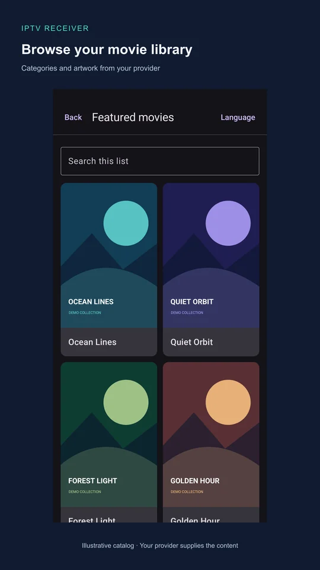

Connect your provider
Sign in to an Xtream-compatible service over HTTP or HTTPS. Optionally remember a connection with encrypted storage on your device using Android Keystore.
Android · Phones & tablets
Your provider. Your library. Find live TV, movies and series, pick up where you left off, and explore your channel guide on an Android phone or tablet.
0.1.14 · Signed development build · Android 8.0+
Not yet on Google Play. The latest release includes its source commit and download checksum.

What you can do
Sign in to an Xtream-compatible service over HTTP or HTTPS. Optionally remember a connection with encrypted storage on your device using Android Keystore.
Search across all channels, movies or series in your connected account, or stay within a category. Explore details, filter genres, choose a sort and return to your saved search position.
Use fullscreen, Fit/Zoom/Stretch, aspect ratios and available audio/subtitle tracks. Rotation keeps your session, and live playback retries temporary interruptions.
Resume movies and episodes, start over, see watched status and season counts, or continue a series. Progress stays on this device until you clear it.
Browse current, upcoming and past programmes, search schedules and replay eligible archives when your provider supports them. Availability and schedule accuracy depend on the provider.
Adult content is blocked by default. Add password-protected category locks, choose from ten interface languages, review account information and clear this account’s viewing data.
The interface follows your device language, with English fallback. Automatic next-episode playback, a simultaneous multi-channel guide, durable catalog caching and Android TV remain planned. Windows, LG webOS and Samsung Tizen are also in the roadmap; the current app is Android-only.
Get started
IPTV Receiver does not include an IPTV subscription, channels, films or series. You need your own provider account and permission to access its content.
Download the latest APK on Android 8.0 or later and open it. If Android asks, allow installation from your browser or file manager. Updates signed with the same certificate retain local data.
Enter your provider’s HTTP or HTTPS server address, username and password. Keep real account details out of GitHub, screenshots and bug reports.
Open Live TV, Movies, Series, TV guide or Watch history. Use Settings for language, parental controls and account information. Prefer to build it yourself? Follow the Android Studio instructions.
Documentation
Installation, browsing, player controls, progress, guide, parental settings and common issues are in the user guide.
Start with the build instructions, architecture, provider contract and contributor guide.
Read the test and device record, APK release policy and security guidance.
Physical playback checks cover selected streams on a Pixel 9 Pro XL. Broader provider coverage, API 26/tablets, visual RTL, actual subtitle cues and the minified build on hardware remain to be validated. Each verification report states its own scope.
A few useful answers
No. It is a client for an existing Xtream-compatible provider. It does not supply, sell or bundle content or subscriptions.
Not yet. A signed development APK is available from GitHub Releases. Store listings and privacy materials in the repository are preparation drafts.
Recent movie/episode history lasts 180 days and live-channel history lasts 10 days. Watched status and resume points stay until explicitly cleared. Data is local to this installation and separate for each provider account; there is no cloud sync. Settings can clear this account’s history and progress after confirmation.
Logout removes the remembered connection and hides its viewing data. Reconnecting with the same provider account restores that data. Clearing Android app storage or uninstalling removes all local records and parental settings.
HTTP and HTTPS work automatically, with no compatibility switch. Prefer HTTPS when your provider supports it: HTTP account and media requests are unencrypted. HTTPS certificate checks remain enabled.
A forgotten password cannot be recovered. Reset removes the password and every account’s custom category locks, restores adult blocking to enabled and asks you to set a new password. Automatic adult classification depends on provider metadata.
The current app runs on Android phones and tablets. Dedicated Android TV, Windows, LG webOS and Samsung Tizen clients are planned; they are not available yet.
Yes. The project's original code, documentation and artwork are available under the MIT License. You can use, modify and redistribute them, including commercially, while keeping the copyright and license notice. Third-party components retain their own licenses. This does not grant rights to provider subscriptions, streams or artwork; see the license notes.